Users start with an entry page to help identify the site and brand. Using a black background will help maintain the user's battery life on their watch. Pressing enter leads to the landing/main navigation.
After clicking "buy now", users can choose what they would like to buy. Choosing "custom flannel" leads to the measurement section.
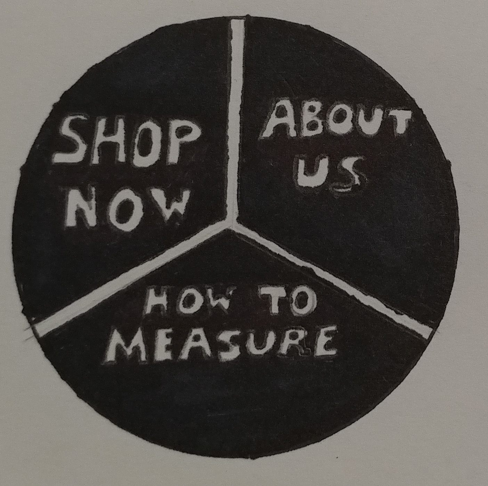 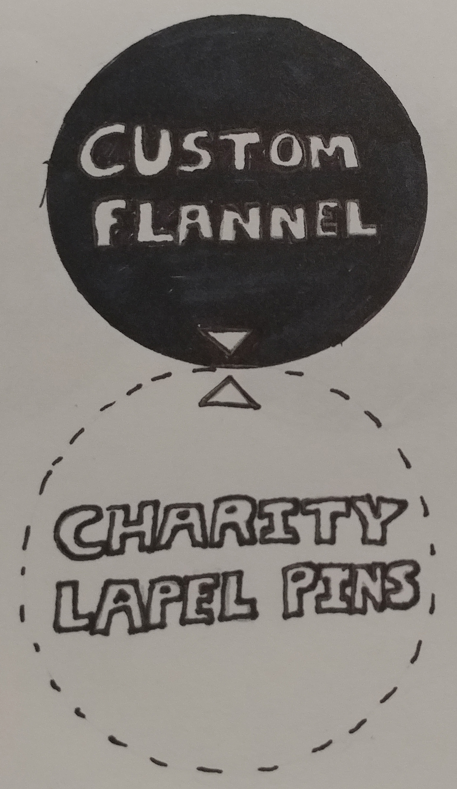For measurements, users can tap on the entry field and enter in their measurements with the watch's built-in keyboard. After each measurement, they can swipe left to enter in another, measurement until they are ready and hit submit. Hitting submit brings them the custom options section
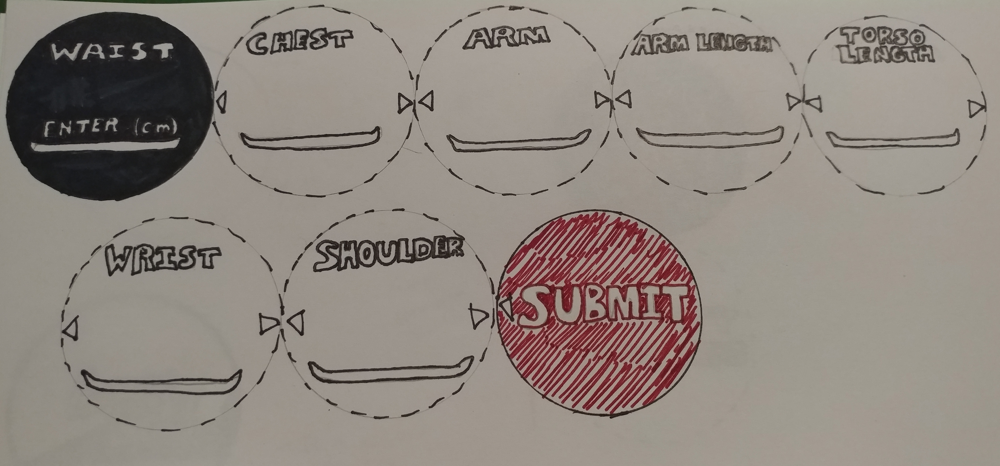For custom options, users can swipe left and right between the different options, and swipe up and down to select which style they would like. The images shown on the watch will change to show what their selected option looks like. Hitting submit once the user is done customizing will bring them to the billing section
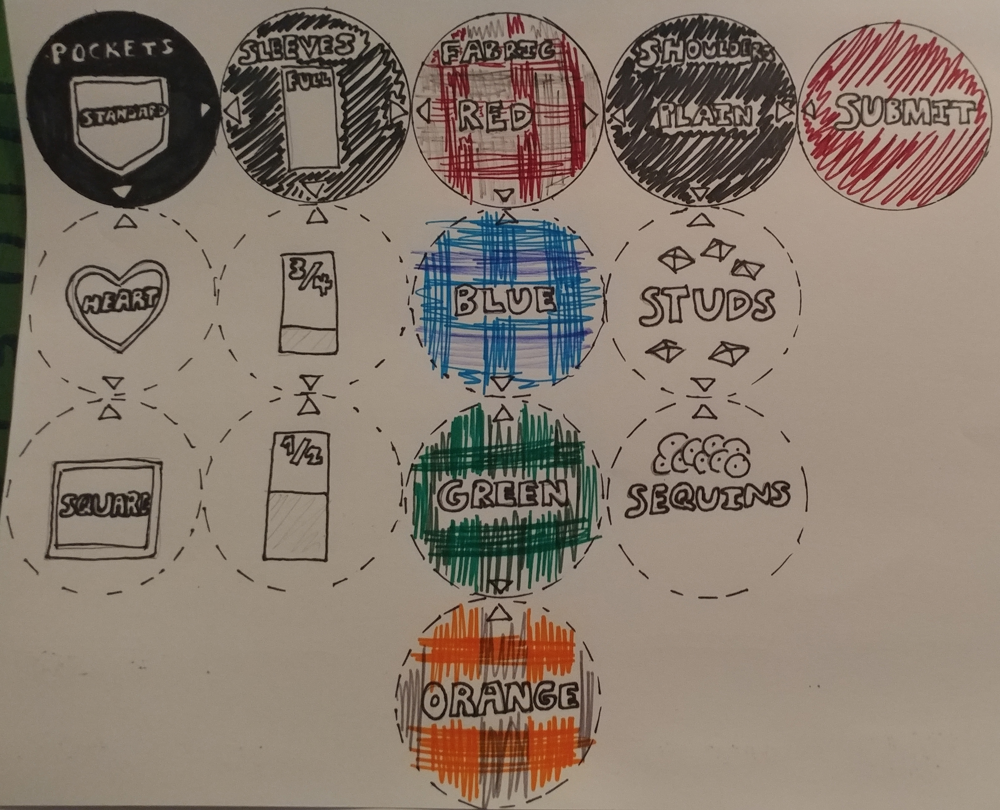Tapping on the select card, the watch can access the users mobile payment options, like Apple Pay, Android Pay, or Samsung Pay. Once they've confirmed their payment, they swipe left to submit the order, and then receive an order confirmation message.
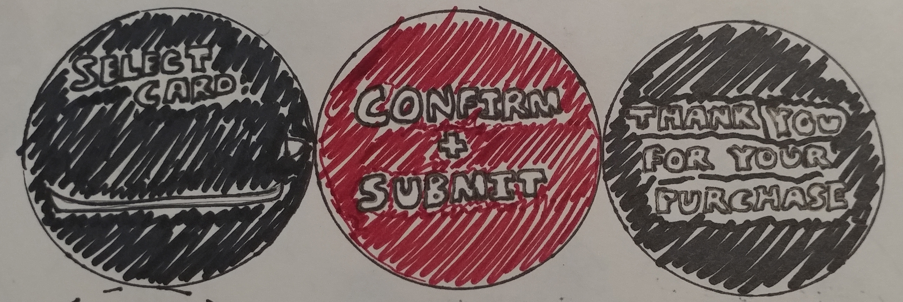Users start at a landing page, and can select "buy now" to begin buying a flannel
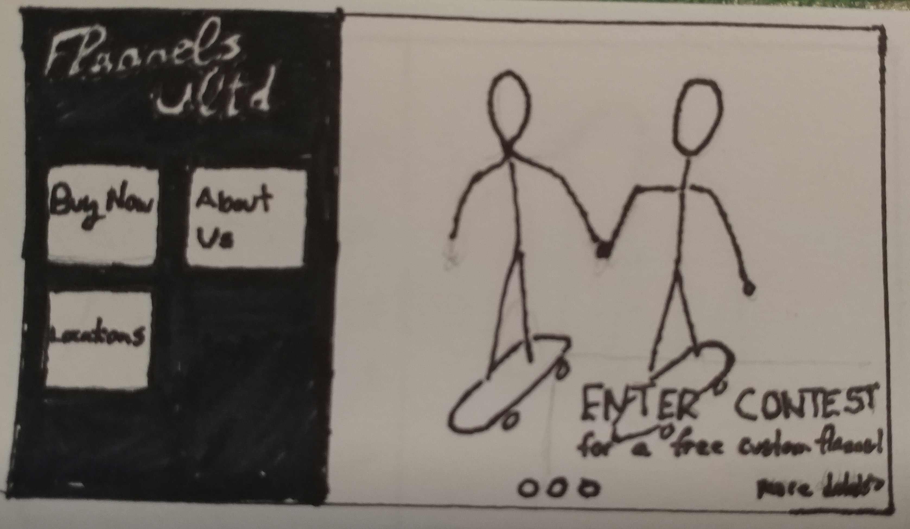From there, users enter in each their measurements using their console or tv's built-in keyboard. As they progress, the image on the right will change to show the user how the measurement is taken if they don't already have it or don't know how to measure. Then can then hit submit to proceed to the next step.
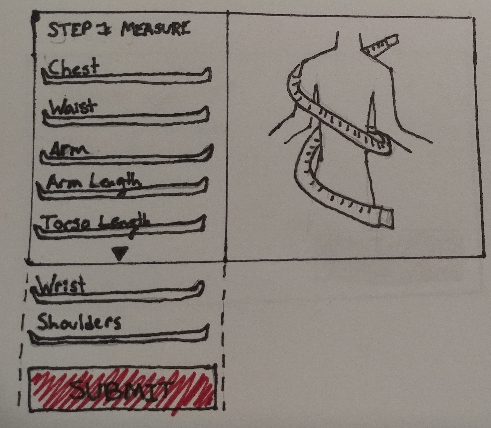After entering measurements, the user can select their custom options via the dropdown entries on the left. As they progress, the image on the right will change to show them what each option looks like. Once they're satisfied with their choices, they can hit submit
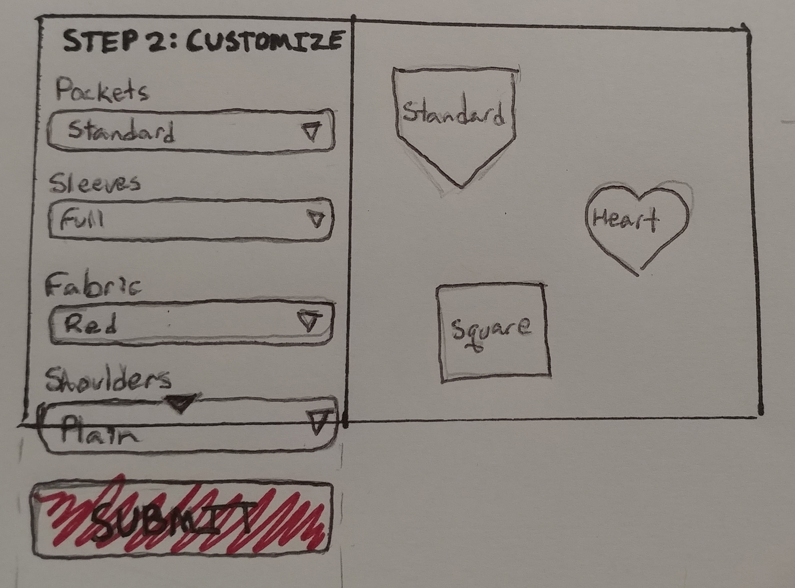Once the custom flannel has been chosen, the user must enter their billing information. Once that is complete, they receive an order confirmation message
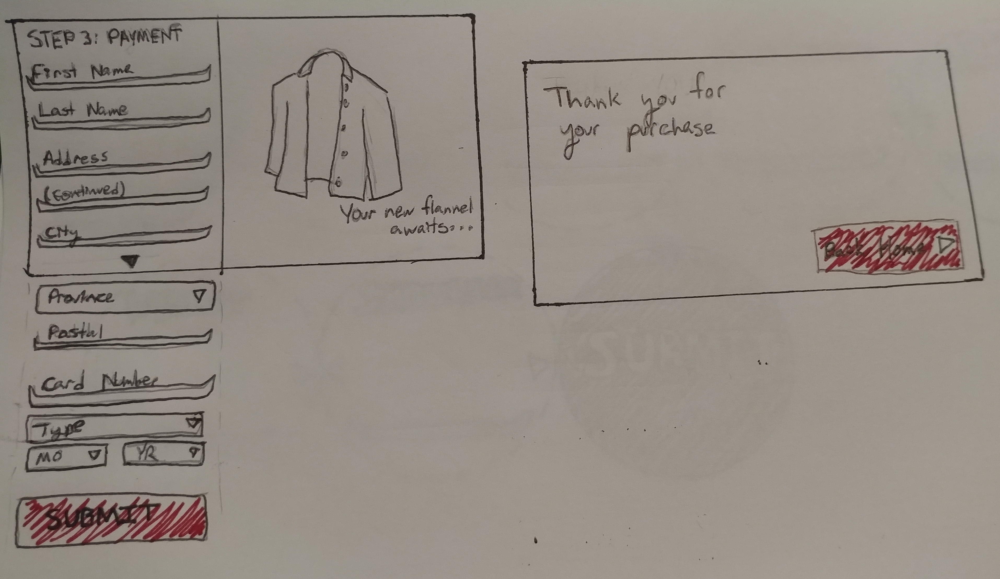Users start on the landing page and hit "buy now". From there, they can select to buy a custom flannel. They are then taken through a series of steps to complete the process, starting with step 1, where users must enter their measurements in text fields and then hit submit
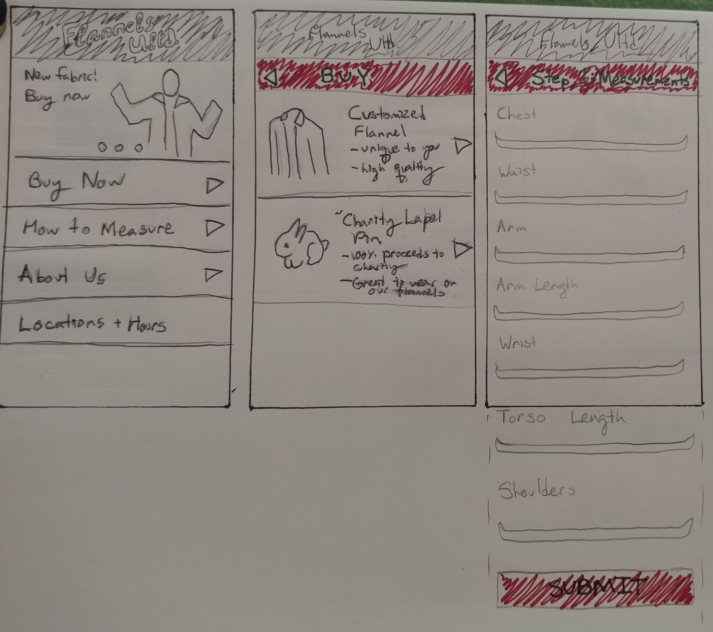After entering the measurements, users must select the custom options they like through a series of dropdown fields. Once they are satisfied with their choices they can hit submit, taking them to step 3 to enter their billing information. With their billing information complete, users can hit submit again and receive an order confirmation
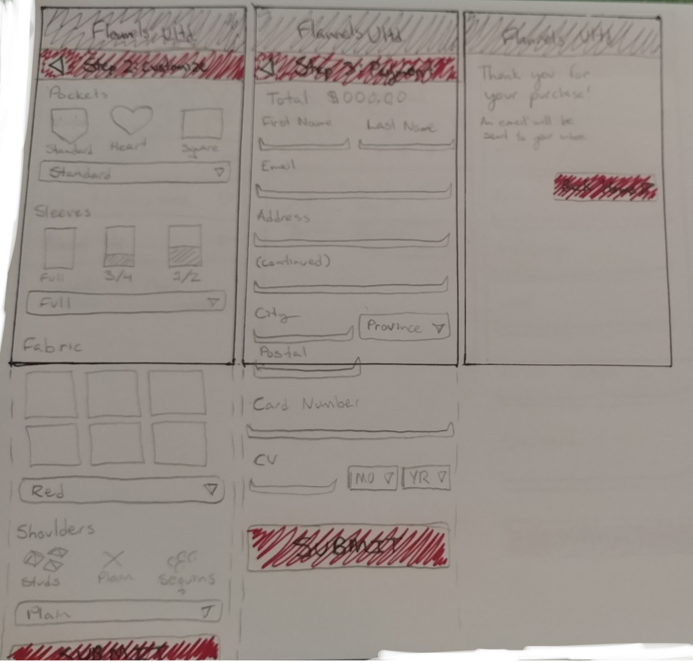